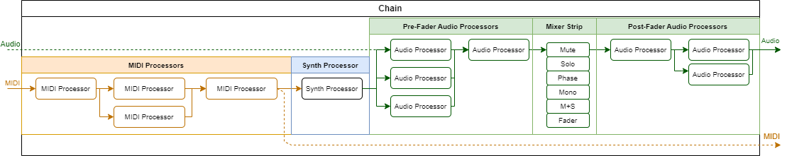

User Guide
This guide describes the core principles of using zynthian. It is essential that you understand these core principles. Each view has its own help page that describes in more detail the workflow of the page.
Knob Actions
There are five knob actions:
- Rotate: Rotating a knob adjusts a value. This may be a listbox selection, parameter value, etc. Knob acceleration allows for finer adjustment at slow rotation and coarser adjustment at faster rotation.
- Press and rotate: Rotating a knob whilst it is pressed may increase the resolution, allowing for fine adjustment.
- Short Press: Pressing and releasing a knob within 1 second triggers the short push action.
-
- Bold Press: Pressing and releasing a knob within 1.5 seconds triggers the bold push action.
-
- Long Press: Pressing and holding a knob for at least 2 seconds triggers the long push action.
-
Processors & Chains
The fundamental building block of zynthian's sound architecture is the processor. A processor generates or manipulates audio or MIDI signals. Zynthian includes over 1000 processors to choose from.
Processors are grouped together and interconnected within chains. Chains are a key concept in Zynthian. The first thing you will do after powering-on your zynthian for first time, once you stop celebrating your success, is to create a chain and add some processors. It does little without any chains!
Processors may be positioned within the chain in series or in parallel. The quantity of chains or processors in each chain is only limited by available computing power. Audio signals from chains by default feed a stereo mixer with typical mixer strip controls: fader, balance, mute, solo, phase reverse, etc. Audio processors may be positioned pre-fader or post-fader. (Note that zynthian treats most audio as stereo.)
The audio and MIDI signals are routed between physical inputs, chain inputs, chain outputs, physical outputs and processor sidechain inputs. This provides a lot of flexibility whilst maintaining a simple, chain-based approach to signal routing (see Chain Manager help for details).

Types of processor
There are five fundamental processor types:
- Synth: Receives MIDI events and generates audio output.
- MIDI: Receives MIDI events and generates MIDI output.
- Audio: Receives audio input and generates audio output.
- Generator: Generates audio output and has no input.
- Special: Receives MIDI events and audio input and generates MIDI output and audio output.
Each type of processor is categorised to ease user selection, e.g. Synths have categories: Synth, Sampler, Piano, Organ, Acoustic & Percussion.
Each processor has parameters that may be controlled with zynthian knobs or mapped to MIDI CC messages (see control view help for details). Processors may have presets that may be arranged in banks (see preset vew help for details).
MIDI Input
Chains receive MIDI data from a set of MIDI inputs. These could be external MIDI devices connected to MIDI DIN-5, USB MIDI, network MIDI or internal sources like the built-in sequencer. They can be enabled for each chain separately. Each MIDI input can work in 2 different modes:
Active mode
When a MIDI input is configured in active mode, the active chain receives all MIDI input from it and all MIDI events are translated to the active chain's MIDI channel. This is the default mode for all MIDI inputs. When using active mode you don't need to worry about the MIDI channel your keyboard or controller is using. You change which instruments are played by changing the active chain in your zynthian (see mixer view for details).
Active mode's behavior can be modified by the Active MIDI channel global flag. This may be enabled in the admin menu and has the following behaviour:
- Active MIDI channel Disabled: Only the active chain receives data from the MIDI input in active mode. This is the default setting.
- Active MIDI channel Enabled: All chains with the same MIDI channel as the active chain receive data from the MIDI input in active mode. This is very useful for layering sounds without any extra routing. You simply create several synth chains with the same MIDI channel and they will play in unison. You can also create keyboard splits by adjusting note range and transpose for each chain (see key range view for details).
Multitimbral mode
When a MIDI input is configured in multitimbral mode, only those chains matching the input's MIDI channel will receive data from this input. No MIDI channel translation is performed. Multitimbral mode allows receiving and managing each MIDI channel individually. Each MIDI input selects the chains it drives using the MIDI channel. If you are using an external sequencer or a MIDI controller that sends on multiple MIDI channels, you may want to use multitimbral mode.